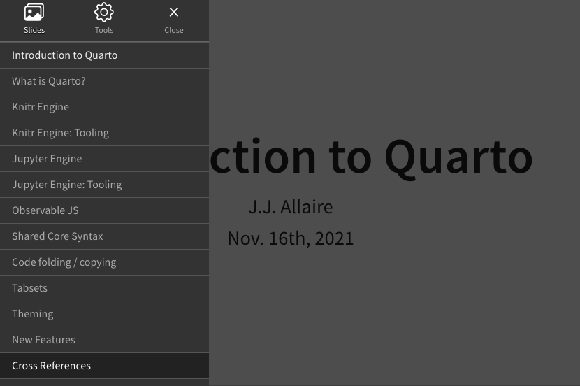
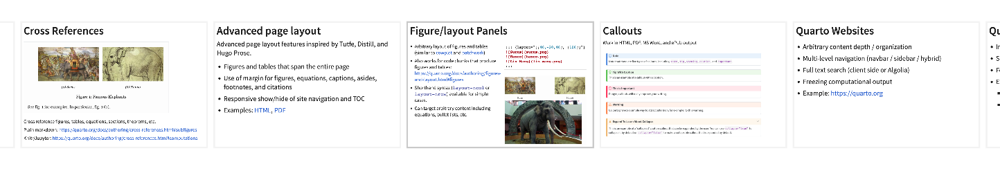
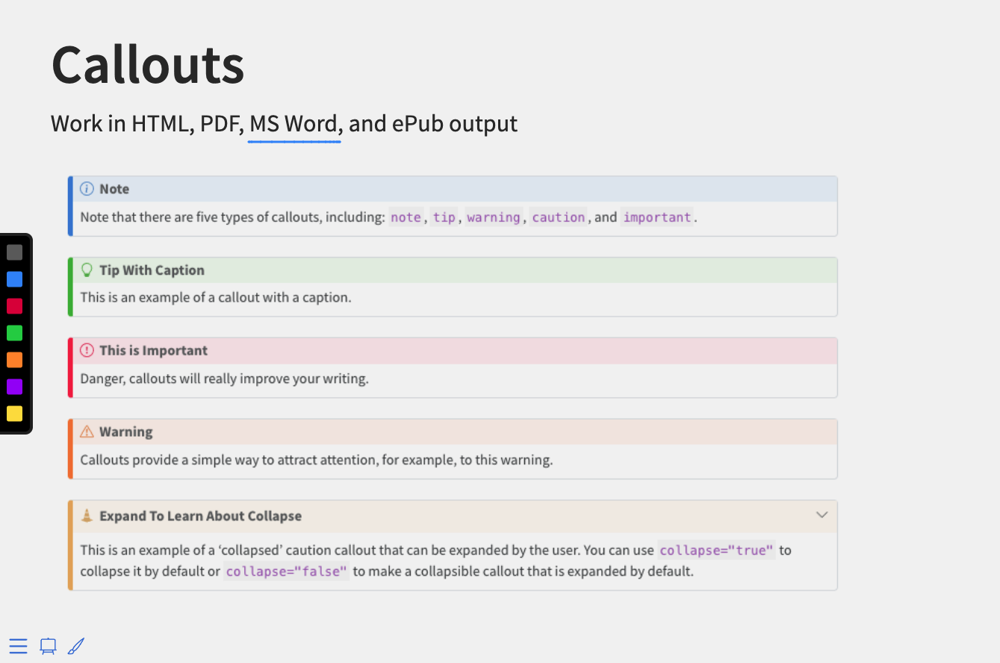

Reveal 演示
概述
本文介绍进行 Reveal 幻灯片演示的方法。演示者可使用以下键盘快捷键完成基本的导航：
| 动作 | 快捷键 |
|---|---|
| 下一页幻灯片 | → SPACE N |
| 前一页幻灯片 | ← P |
| 无增量分片的导航 | Alt → Alt ← |
| 跳到首页 / 末页幻灯片 | Shift → Shift ← |
在演示时，你可通过按 F 键进入全屏演示模式。
除了基本的键盘导航之外，Reveal 还支持多种高级功能，包括：
- 导航菜单和概览模式
- 演示者视图（带有演示者备注、计时器和下一页幻灯片的预览）
- 打印为 PDF 或者发布为自包含的单个 HTML 文件
- 在幻灯片和黑板 / 白板模式上板书
- 同步演示（即让观众在他们各自的手机、平板或笔记本电脑上跟随由你控制的演示节奏）
这些功能如下所述。
导航菜单
Quarto 包含一个内置版本的 reveal.js-menu 插件。你可以使用演示文稿左下角的按钮  访问导航菜单。单击该按钮将打开一个幻灯片导航菜单，使得你可以轻松跳转到任何幻灯片：
访问导航菜单。单击该按钮将打开一个幻灯片导航菜单，使得你可以轻松跳转到任何幻灯片：

你也可以通过按下 M键 打开导航菜单。
导航菜单还包括工具窗格（Tools），可通过该窗格访问各种其他导航工具，包括全屏、演示者视图、概览模式和打印为 PDF 文档。
使用以下选项自定义菜单的外观和行为：
| 选项 | 说明 |
|---|---|
side |
将菜单显示在演示文稿的左侧或右侧（left或right，默认为 left） |
width |
菜单的宽度（normal、wide、third、half、full 或任何有效的 css 长度值，默认为 normal） |
numbers |
将幻灯片编号添加到菜单项 |
示例如下：
format:
revealjs:
menu:
side: right
width: wide你可以通过指定选项 menu: false 来隐藏导航菜单按钮：
format:
revealjs:
menu: false注意，即使导航菜单按钮被隐藏，你仍然可以使用 M键 打开导航菜单。
概览模式
概览模式提供了另一种视图，显示每张幻灯片的缩略图：

你可以通过按下 O键来启用概览模式。
幻灯片缩放
按住 Alt键（或者 Linux中的 Ctrl 键）并单击任意元素可对其进行缩放。尝试放大以下图像之一：
按住 Alt（或者 Ctrl），再次单击可恢复缩放。
演示者视图
演示者视图显示当前幻灯片以及即将播放的幻灯片、计时器以及与当前幻灯片关联的任何演示者备注：

你可以通过按 S 键启用演示者视图。
你可以使用类为.notes的div块将演示者备注添加到幻灯片中。例如：
## 含有演示者备注的幻灯片
幻灯片内容
::: {.notes}
此次为演示者备注
:::幻灯片编号
你可以使用 slide-number 选项将幻灯片编号添加到演示文稿中。你还可以使用 show-slide-number 选项控制幻灯片编号在哪些环境下显示。例如，我们可设置仅用于打印输出的幻灯片编号：
---
title: "演示文稿"
format:
revealjs:
slide-number: true
show-slide-number: print
---除了设定为简单的 true 或者 false 之外，slide-number 选项还可以指定格式。可用的格式包括：
| 选项值 | 说明 |
|---|---|
c/t |
当前幻灯片编号 / 总幻灯片数（默认值） |
c |
只显示当前幻灯片编号 |
h/v |
横向编号/纵向编号 |
h.v |
横向编号.纵向编号 |
参见 纵向幻灯片 获取更多信息。
show-slide-number 选项支持以下取值：
| 选项值 | 说明 |
|---|---|
all |
在所有环境下显示幻灯片编号（默认值） |
print |
只在打印为 PDF 文档时显示幻灯片编号 |
speaker |
只在演示者视图下显示幻灯片编号 |
打印为PDF
Reveal 演示文稿可以通过特殊的打印样式表导出为 PDF 文档。
注意：此功能使用仅在 Google Chrome 和 Chromium 中得到过验证。
要打印为 PDF 文档，请执行以下操作：
- 使用 E键（或使用导航菜单）切换到打印视图
- 打开浏览器内的打印对话框 (CTRL/CMD+P)。
- 将目标打印机（Destination）设置更改为另存为 PDF（Save as PDF）。
- 将布局（Layout）更改为横向（Landscape）。
- 将边距（Margins）更改为无（None）。
- 启用背景图形选项（Background graphics）。
- 点击保存按钮（Save）🎉
启用上述设置后，Chrome 打印对话框如下所示：

打印选项
有许多选项会影响打印输出，你可能需要在打印之前设置这些选项：
| 选项 | 说明 |
|---|---|
show-notes |
包括演示者备注（true、false 或 separate-page） |
slide-number |
包含幻灯片编号（true 或者 false） |
pdf-max-pages-per-slide |
太高而无法容纳在单个页面中的幻灯片将扩展到多个页面，你可使用该选项限制幻灯片可以扩展的最多页数 |
pdf-separate-fragments |
默认情况下，具有多增量分片的幻灯片将打印在单页上，如果要为每个分片创建一个页面，需将此选项设置为 true |
例如，以下选项设定打印幻灯片时包含幻灯片编号并在单独页面上打印演示者备注：
---
title: "演示文稿"
format:
revealjs:
show-notes: separate-page
slide-number: true
---预览链接
Reveal 通过设置 preview-links 选项可以轻松地将对外部网站的导航嵌入到幻灯片演示流程中。
当你点击一个设定 preview-links: true 的超链接时，你将在遮盖幻灯片的 iframe 中直接导航到该链接。在下面示例图中，我们点击 Matplotlib链接，网站在幻灯片顶层打开（此时，你可以单击右上角的关闭按钮将其隐藏）：

preview-link 选项的可用设置值包括：
| 选项值 | 说明 |
|---|---|
auto |
在全屏演示时直接预览链接（否则以正常方式导航到新链接） |
true |
总是预览链接 |
false |
从不预览链接（默认值） |
例如，我们将 preview-links 选项设置为 auto：
---
title: "演示文稿"
format:
revealjs:
preview-links: auto
---你还可以针对每个链接设置此选项。如下两个链接分别启用和禁用预览模式：
[预览链接模式](https://example.com){preview-link="true"}
[非预览链接模式](https://example.com){preview-link="false"}幻灯片音效
在启用幻灯片音效后，当你切换幻灯片时，幻灯片会发出微妙的声音。该功能是应一位盲人用户的要求而设计的，使得演示者能够听到幻灯片播放进度的听觉信号。启用幻灯片音效的方式如下：
format:
revealjs:
slide-tone: true随着幻灯片切换，幻灯片音调逐渐从低音C提高至高音C。对于增量幻灯片，音调保持不变。
幻灯片音效的实现改编自 xaringanExtra 包中的幻灯片音效插件。
自动放映
演示文稿可以配置为自动放映幻灯片，无需任何用户的输入。要启用此功能，你需要设置 auto-slide 选项为指定幻灯片切换的间隔（间隔以毫秒为单位）。还可以设置 loop 选项来指定在全部幻灯片放映完毕后是否继续循环放映。
例如，我们在这里指定每 5 秒前进一页幻灯片并循环放映：
---
title: "演示文稿"
format:
revealjs:
auto-slide: 5000
loop: true
---对于自动放映的幻灯片，将会出现播放/暂停的控制按钮。如果用户与平台进行交互，自动放映会暂停。你还可以通过按 A 键来暂停或恢复自动放映。
你可以通过设定 auto-slide-stoppable: false 来禁用自动放映控件并防止放映暂停。
幻灯片计时
我们还可以通过设置特定幻灯片的 autoslide 属性来修改切换的持续时间，这一设置也适用于 分片)。例如，我们在此将该页幻灯片的自动放映时长设置为2秒：
## 幻灯片标题 {autoslide=2000}发布
发布 Reveal 演示文稿有两种主要方式：
发布为 PDF 文档——参阅前述 打印为 PDF 一节，了解有关如何执行此操作的详细信息。
发布为 HTML 文件。对于 HTML 文档，将演示文稿作为自包含单个文件分发通常最为方便。为此，可指定
embed-resources选项：--- title: "演示文稿" format: revealjs: embed-resources: true ---文档所依赖的图像、CSS 样式和其他资源都将包含在 Quarto 创建的 HTML 文件中。
请注意，设定 embed-resources 选项可能会使幻灯片文档的渲染速度慢几秒钟，因此你最好在准备发布时才启用 embed-resources 选项。另请注意，Reveal 插件 Chalkboard 不兼容 embed-resources——启用 Chalkboard 插件后，embed-resources: true 将导致错误。
有关发布 Reveal 演示文稿（包括 GitHub Pages 和 Posit Connect）的其他方法的详细信息，请参阅发布 HTML文档。
导航选项
Reveal 演示文稿提供了多个导航提示以及控制它们的相应选项：
| 选项 | 说明 |
|---|---|
controls |
显示用于浏览幻灯片的箭头控件（默认为 auto，即当存在纵向幻灯片或幻灯片嵌入到 iframe 中时显示控件）。 |
progress |
在底部显示进度条（默认为 true） |
history |
将幻灯片页面切换推送到浏览器的历史记录（默认为 true，这意味着浏览器的前进/后退按钮可用于导航） |
hash-type |
用于幻灯片的 URL 哈希的类型（默认为 title，即根据幻灯片标题计算得到，也可以指定为 number） |
例如，以下设置隐藏进度条并指定我们要使用浏览器历史记录：
---
title: "演示文档"
format:
revealjs:
progress: false
history: true
---板书
Quarto 包含一个内置版本的 Reveal.js-chalkboard 插件。指定 chalkboard: true 将启用该插件。该插件使你能够在幻灯片上层的笔记画布上进行板书和/或在演示文稿中打开一个空白黑板：
---
title: "演示文稿"
format:
revealjs:
chalkboard: true
---请注意，Reveal的 Chalkboard 插件与 embed-resources 输出不兼容—— 当启用 Chalkboard 插件后，设置 embed-resources: true 将导致错误。
以下是笔记画布和黑板激活后的样子：


要打开和关闭笔记画布，请使用按钮  或者 C键。
或者 C键。
要打开和关闭黑板，请使用按钮 或者 B键。。
以下是与笔记画布和黑板相关的全部快捷键：
| 行为 | 键盘快捷键 |
|---|---|
| 打开/关闭笔记画布 | C |
| 打开/关闭黑板 | B |
| 重置全部板书 | BACKSPACE |
| 清除幻灯片上的板书 | DEL |
| 向前循环板书颜色 | X |
| 向后循环板书颜色 | Y |
| 下载板书 | D |
以下鼠标和触摸手势可用于与板书交互：
单击左下角的按钮可切换笔记画布或黑板
单击左侧的颜色选择器可更改颜色（仅当笔记画布或黑板处于活动状态时，颜色选择器才可见）
点击右侧上/下箭头可切换多个黑板（上/下箭头仅适用于黑板）
单击鼠标左键并拖动以在笔记画布或黑板上书写
单击鼠标右键并拖动以擦除以前的绘图
触摸并移动以在笔记画布或黑板上书写
触摸并按住半秒钟，然后移动以擦除之前的板书
恢复板书
按 D 键会将当前的活动板书下载到 JSON 文件中。然后，你可以通过设置 src 选项在展示演示文稿时恢复这些板书。例如：
---
title: "展示文稿"
format:
revealjs:
chalkboard:
src: drawings.json
---板书选项
以下选项可用于自定义板书的行为和外观：
| 选项 | 说明 |
|---|---|
theme |
可设置为 chalkboard（默认值）或者 whiteboard |
boardmarker-width |
记号笔粗细（值越大，线越粗，默认为3） |
chalk-width |
粉笔粗细（值越大，线越粗，默认为7） |
chalk-effect |
粉笔效果（取值范围 [0.0, 1.0]，默认为全效的 1.0） |
src |
之前下载板书的文件名（按 D键 下载） |
read-only |
是否可更改板书文件（默认为 false） |
buttons |
在幻灯片底部增加板书按钮（默认为 true） |
transition |
幻灯片切换的持续时间（以毫秒为单位），切换完成后可在笔记画布上板书 |
例如，以下设置指定要使用 whiteboard 主题并用较粗的记号笔，同时隐藏每页幻灯片底部的板书按钮：
---
title: "演示文稿"
format:
revealjs:
chalkboard:
theme: whiteboard
boardmarker-width: 5
buttons: false
---如果已全局禁用板书按钮，你仍然可以使用 chalkboard-buttons 属性有选择地为特定幻灯片启用板书按钮。例如：
## 幻灯片标题 {chalkboard-buttons="true"}你还可以用 chalkboard-buttons="false" 来关闭单个幻灯片的板书按钮。
同步演示
Quarto 包含 Reveal Multiplex 插件的内置版本。multiplex 插件允许你的让观众在他们各自的手机、平板或笔记本电脑上跟随由你控制的演示节奏。当你更改主演示文稿中的幻灯片时，每个人都会跟随并在自己的设备上看到相同的内容。
创建支持 multiplex 的 Reveal 演示文稿非常简单，你只需设定 multiplex: true 选项：
---
title: "演示文稿"
format:
revealjs:
multiplex: true
---Quarto 渲染演示文稿将创建两个 HTML 文件：
| 文件 | 说明 |
|---|---|
presentation.html |
这是你在线发布给目标受众查看的文件 |
presentation-speaker.html |
这是给你展示用的文件，该文件可以保存在你的计算机上而无需发布 |
演示文稿的两个版本将会保持同步，即当演示者切换幻灯片时，观众也会切换到同一页幻灯片。
同步演示服务器
multiplex服务器在幕后发挥作用，用来在演示文稿的观众版本和演示者版本之间同步幻灯片放映事件。注意，同步服务器实际上并不会看到任何幻灯片内容，它仅用来同步事件。
在默认情况下，由 Revealjs 团队创建和托管的 服务器 被用来实现同步演示。当你设定 multiplex: true 时，将默认使用此服务器。
运行自己的服务器
如果你想运行自己的服务器版本，其源代码位于：https://github.com/reveal/Multiplex/blob/master/index.js。
安装后你就可以将 multiplex 配置为使用该替代服务器，如下所示：
---
title: "演示文稿"
format:
revealjs:
multiplex:
url: 'https://myserver.example.com/
---请注意，Quarto 在后台调用 multiplex 服务器来为你的演示文稿提供 ID 和密钥。如果你想设置自己的 ID 和密钥，可以在 https://reveal-Multiplex.glitch.me/（或使用你的自定义托管服务器 URL）执行此操作，并在 YAML 中明确提供它们：
---
title: "演示文稿"
format:
revealjs:
multiplex:
id: '1ea875674b17ca76'
secret: '13652805320794272084'
---请注意，secret 值将仅包含在演示文稿的演示者版本中。
了解更多
参阅以下文章以了解有关 Reveal 使用的更多信息：